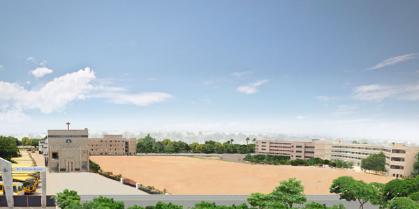
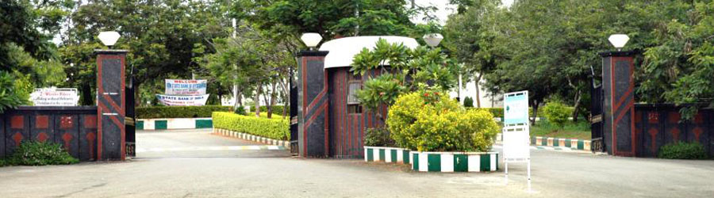

| Quick Facts | |
|---|---|
|  | |
| Class 10: | St. Andrews |
| Intermediate: | FIITJEE |
| Current: | B.Tech. at IIIT-H |
I did my schooling from St. Andrews High School. I studied there from L.K.G. all the way upto Class 10. The school gave me a very good foundadtion by developing me academically as well as all round.
St. Andrews School website ---> St. Andrews High School
I did my Intermediate from FIITJEE which helped in building my espertise in Sciences and Maths.FIITJEE Website
FIITJEE or Forum for Indian Institute of Technology Joint Entrance Examination is a cram school.[1] Its founder-chairman is Mr. D.K. Goel, himself a mechanical engineering graduate from IIT Delhi. FIITJEE is well known for the success of its students in various competitive exams such as the NTSE, KVPY, IIT-JEE, etc.FIITJEE has 60 centres throughout India and also 2 centers in the Persian Gulf (Doha, Bahrain). It has 6 branches in Delhi. Some of the top ranks in the country, 7 in top 20 ranks in iit-jee 2013 came from this institute. It is the largest coaching organization in India, with pan-India presence. It provides coaching for JEE-Mains and Advanced, SAT, NTSE.
Currently I am pursuing my Computer Science Engineering from a well reputed college- "IIIT Hyderabad"
The International Institute of Information Technology, Hyderabad (IIIT Hyderabad) is an autonomous university in Hyderabad, Telangana, India. It was established in 1997, and is one of the top Computer Science institutes in the country. It emphasizes research from the undergraduate level. It has been a consistent performer from India in ACM International Collegiate Programming Contest (ICPC) and finished at #18 in 2012. Raj Reddy, the only Indian to win the Turing Award, is chairman of the board of governors. Raj Reddy is not an Indian. He became an US citizen many years ago. In fact, there is no Indian Turing laureate and there will not be one in near future. Moreover, no Turing laureate will ever agree to agree to on the board of an Indian institute.
Click on the image:
IIIT Hyderabad